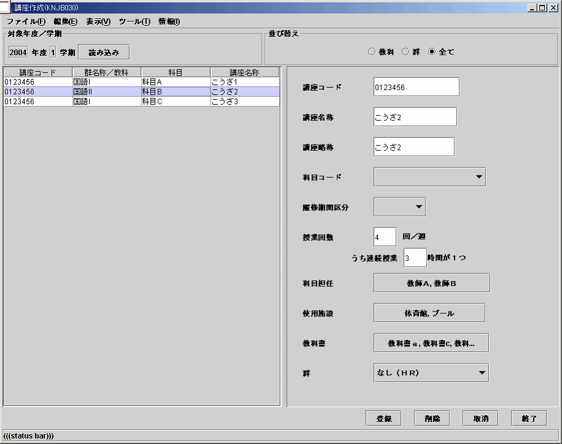

講座作成(KNJB030)
講座を作成する。１つの講座には同時展開の有無や講座を受講するクラス、施設などがある。
パラメータ
| 職員コード |
staffcd |
999999 |
| 年度 |
year |
2004 |
| 学期 |
semester |
1 |
| DB名 |
dbname |
|

主な関連テーブル
- chair_dat
- chair_cls_dat
- chair_stf_dat
- chair_textbook_dat
- chair_fac_dat
その他
メニューバー
| ファイル(F) |
編集(E) |
表示(V) |
ツール(T) |
| 保存(S) |
削除(D) |
時間割作成 |
CSV取込み |
| 終了(X) |
取消(C) |
名簿入力 |
|
|
年度・学期のコピー(A) |
|
|
「対象年度／学期」エリア
- 年度＋学期、「読み込み」ボタンで該当データを表示する。
- データが無い場合、空白の１行を表示、ある場合は先頭行をSelectedにする。
「絞込み」エリア
- 選択された内容で一覧を表示する
「教科」、「群」の区別は選択群コードが０か否か？
「一覧」エリア
- 講座の一覧が表示される。
- Singleセレクトで、セレクトした行の内容がプロパティエリアに表示される。
- ５０００件を超えるとワーニング⇒ステータスバー
「プロパティ」エリア
- 講座コードはキーの為、必須
- 講座をコピーしたい場合は、まずコピー元の講座を選択し、講座コードを書き換えて保存すれば良い
- 授業回数は「４回うち３時間」とは１週間のうちに１時間授業と３時間授業の２回となる
- すなわち連続枠数は「２」以上となる
- すなわち連続枠数は週授業回数「以下」となる
- 科目担任は最低でも１人は選択しなければならない。かつ、正担任が最低でも1人はいなければならない。
「登録」ボタン
- 該当レコードがある場合、ステータスバーに「講座コード xxx を更新しました」
- 該当レコードがない場合、ステータスバーに「講座コード xxx を新規作成しました」
「削除」ボタン
- 該当レコードを削除する。ステータスバーに「講座コード xxx を削除しました」
過去のデータのコピー機能
過去の学期（年度）のデータをコピーできる。その際、生徒もコピーするか選べる。
{kind=link}